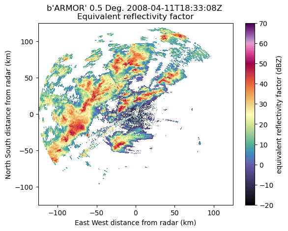

Identify a Case for the AMS Open Radar Short Course 2023
Imports
import glob
import fsspec
import pyart
import matplotlib.pyplot as plt
import pydda
import warnings
warnings.filterwarnings("ignore")
## You are using the Python ARM Radar Toolkit (Py-ART), an open source
## library for working with weather radar data. Py-ART is partly
## supported by the U.S. Department of Energy as part of the Atmospheric
## Radiation Measurement (ARM) Climate Research Facility, an Office of
## Science user facility.
##
## If you use this software to prepare a publication, please cite:
##
## JJ Helmus and SM Collis, JORS 2016, doi: 10.5334/jors.119
2023-05-12 19:56:38.221900: I tensorflow/core/platform/cpu_feature_guard.cc:193] This TensorFlow binary is optimized with oneAPI Deep Neural Network Library (oneDNN) to use the following CPU instructions in performance-critical operations: SSE4.1 SSE4.2 AVX AVX2 AVX512F FMA
To enable them in other operations, rebuild TensorFlow with the appropriate compiler flags.
Welcome to PyDDA 1.2.0
Detecting Jax...
Jax engine enabled!
Detecting TensorFlow...
TensorFlow detected.
TensorFlow-probability detected. TensorFlow engine enabled!
April 2008
UAH ARMOR Radar
files = glob.glob('../../data/uah-armor/*')
radar = pyart.io.read(files[1])
nyquist = radar.instrument_parameters['nyquist_velocity']['data'][0]
vel_dealias = pyart.correct.dealias_region_based(radar,
vel_field='velocity',
nyquist_vel=nyquist,
centered=True,
)
radar.add_field('corrected_velocity', vel_dealias, replace_existing=True)
display = pyart.graph.RadarDisplay(radar)
display.plot('reflectivity',
vmin=-20,
vmax=70,
cmap='pyart_ChaseSpectral',
sweep=0)

display = pyart.graph.RadarDisplay(radar)
display.plot('corrected_velocity',
vmin=-30,
vmax=30,
cmap='twilight_shifted',
sweep=0)

grid_limits = ((0., 15000.), (-50_000., 50_000.), (-50_000., 50_000.))
grid_shape = (31, 201, 201)
uah_grid = pyart.map.grid_from_radars([radar], grid_limits=grid_limits,
grid_shape=grid_shape)
uah_ds = uah_grid.to_xarray()
uah_ds
<xarray.Dataset>
Dimensions: (time: 1, z: 31, y: 201, x: 201)
Coordinates:
* time (time) object 2008-04-11 18:33:08
* z (z) float64 0.0 500.0 ... 1.45e+04 1.5e+04
lat (y, x) float64 34.2 34.2 34.2 ... 35.09 35.09
lon (y, x) float64 -87.32 -87.31 ... -86.23 -86.22
* y (y) float64 -5e+04 -4.95e+04 ... 4.95e+04 5e+04
* x (x) float64 -5e+04 -4.95e+04 ... 4.95e+04 5e+04
Data variables:
corrected_velocity (time, z, y, x) float32 nan nan nan ... nan nan
cross_correlation_ratio (time, z, y, x) float32 nan nan nan ... nan nan
spectrum_width (time, z, y, x) float32 nan nan nan ... nan nan
reflectivity (time, z, y, x) float32 nan nan nan ... nan nan
total_power (time, z, y, x) float32 nan nan nan ... nan nan
velocity (time, z, y, x) float32 nan nan nan ... nan nan
differential_reflectivity (time, z, y, x) float32 nan nan nan ... nan nan
differential_phase (time, z, y, x) float32 nan nan nan ... nan nan
specific_differential_phase (time, z, y, x) float32 nan nan nan ... nan nan
ROI (time, z, y, x) float32 1.852e+03 ... 2.602e+03uah_ds.isel(z=1).reflectivity.plot(x='lon',
y='lat',
vmin=-20,
vmax=70,
cmap='pyart_ChaseSpectral')
<matplotlib.collections.QuadMesh at 0x7f76b897bdf0>
NEXRAD Data
fs = fsspec.filesystem("s3", anon=True)
files = sorted(fs.glob("s3://noaa-nexrad-level2/2008/04/11/KHTX/KHTX20080411_18*"))
files
['noaa-nexrad-level2/2008/04/11/KHTX/KHTX20080411_180040.gz',
'noaa-nexrad-level2/2008/04/11/KHTX/KHTX20080411_180647.gz',
'noaa-nexrad-level2/2008/04/11/KHTX/KHTX20080411_181144.gz',
'noaa-nexrad-level2/2008/04/11/KHTX/KHTX20080411_181643.gz',
'noaa-nexrad-level2/2008/04/11/KHTX/KHTX20080411_182140.gz',
'noaa-nexrad-level2/2008/04/11/KHTX/KHTX20080411_182639.gz',
'noaa-nexrad-level2/2008/04/11/KHTX/KHTX20080411_183137.gz',
'noaa-nexrad-level2/2008/04/11/KHTX/KHTX20080411_183635.gz',
'noaa-nexrad-level2/2008/04/11/KHTX/KHTX20080411_184134.gz',
'noaa-nexrad-level2/2008/04/11/KHTX/KHTX20080411_184632.gz',
'noaa-nexrad-level2/2008/04/11/KHTX/KHTX20080411_185130.gz',
'noaa-nexrad-level2/2008/04/11/KHTX/KHTX20080411_185628.gz']
Read a single file, the one closes to the UAH volume scan used before
nexrad_radar = pyart.io.read_nexrad_archive(f's3://{files[4]}', station='KHTX')
display = pyart.graph.RadarDisplay(nexrad_radar)
display.plot('reflectivity',
vmin=-20,
vmax=70,
cmap='pyart_ChaseSpectral',
sweep=0)
plt.ylim(-200, 200)
plt.xlim(-200, 200)
(-200.0, 200.0)

# Use the ARMOR radar lat/lon as the center for the grid
grid_lat = radar.latitude['data'][0]
grid_lon = radar.longitude['data'][0]
# Make sure the velocity is called corrected velocity to match the corrected data from ARMOR
nexrad_radar.add_field_like('velocity',
'corrected_velocity',
nexrad_radar.fields['velocity']['data'],
replace_existing=True)
nexrad_grid = pyart.map.grid_from_radars([nexrad_radar],
grid_limits=grid_limits,
grid_shape=grid_shape,
grid_origin = (grid_lat, grid_lon),
)
# Convert to xarray and remove the time dimension
nexrad_ds = nexrad_grid.to_xarray().squeeze()
nexrad_ds.reflectivity.isel(z=1).plot(x='lon',
y='lat',
cmap='Spectral_r',
vmin=-20,
vmax=70)
<matplotlib.collections.QuadMesh at 0x7f76ac841060>

nexrad_ds.velocity.isel(z=0).plot(x='lon',
y='lat',
cmap='twilight_shifted',
vmin=-30,
vmax=30)
<matplotlib.collections.QuadMesh at 0x7f76ac250940>

u_init, v_init, w_init = pydda.initialization.make_constant_wind_field(
uah_grid, (0.0, 0.0, 0.0), vel_field='corrected_velocity')
grids = pydda.retrieval.get_dd_wind_field([uah_grid, nexrad_grid], u_init,
v_init, w_init, Co=1.0, Cm=256.0,
Cx=1e-3, Cy=1e-3, Cz=1e-3, Cb=0.,
frz=5000.0, filter_window=5,
mask_outside_opt=True, upper_bc=1,
vel_name='corrected_velocity',
wind_tol=0.5, engine="tensorflow")
Calculating weights for radars 0 and 1
Calculating weights for models...
Starting solver
rmsVR = 18.057028
Total points: 376705
The max of w_init is 0.0
Nfeval | Jvel | Jmass | Jsmooth | Jbg | Jvort | Jmodel | Jpoint | Max w
0|380313.4375| 0.0000| 0.0000| 0.0000| 0.0000| 0.0000| 0.0000| 0.0000
The gradient of the cost functions is 1.6066192
Nfeval | Jvel | Jmass | Jsmooth | Jbg | Jvort | Jmodel | Jpoint | Max w
10| 210.0318|1043.5698| 0.0000| 0.0000| 0.0000| 0.0000| 0.0000| 12.3378
The gradient of the cost functions is 0.51546794
Nfeval | Jvel | Jmass | Jsmooth | Jbg | Jvort | Jmodel | Jpoint | Max w
20| 17.2201| 407.0747| 0.0000| 0.0000| 0.0000| 0.0000| 0.0000| 25.3041
The gradient of the cost functions is 1.735486
Nfeval | Jvel | Jmass | Jsmooth | Jbg | Jvort | Jmodel | Jpoint | Max w
30| 9.7208| 269.4887| 0.0000| 0.0000| 0.0000| 0.0000| 0.0000| 33.7406
The gradient of the cost functions is 0.2695737
Nfeval | Jvel | Jmass | Jsmooth | Jbg | Jvort | Jmodel | Jpoint | Max w
40| 4.6191| 193.5090| 0.0000| 0.0000| 0.0000| 0.0000| 0.0000| 39.0541
The gradient of the cost functions is 0.15436721
Nfeval | Jvel | Jmass | Jsmooth | Jbg | Jvort | Jmodel | Jpoint | Max w
50| 28.5430| 183.8196| 0.0000| 0.0000| 0.0000| 0.0000| 0.0000| 42.3499
The gradient of the cost functions is 0.32591817
Nfeval | Jvel | Jmass | Jsmooth | Jbg | Jvort | Jmodel | Jpoint | Max w
60| 3.4784| 131.0335| 0.0000| 0.0000| 0.0000| 0.0000| 0.0000| 41.5998
The gradient of the cost functions is 0.11272804
Nfeval | Jvel | Jmass | Jsmooth | Jbg | Jvort | Jmodel | Jpoint | Max w
70| 3.7581| 108.1646| 0.0000| 0.0000| 0.0000| 0.0000| 0.0000| 45.4841
The gradient of the cost functions is 0.6463597
Nfeval | Jvel | Jmass | Jsmooth | Jbg | Jvort | Jmodel | Jpoint | Max w
80| 1.4571| 96.1937| 0.0000| 0.0000| 0.0000| 0.0000| 0.0000| 49.2842
The gradient of the cost functions is 0.1254958
Nfeval | Jvel | Jmass | Jsmooth | Jbg | Jvort | Jmodel | Jpoint | Max w
90| 1.0800| 82.1974| 0.0000| 0.0000| 0.0000| 0.0000| 0.0000| 55.0737
The gradient of the cost functions is 0.081615396
Nfeval | Jvel | Jmass | Jsmooth | Jbg | Jvort | Jmodel | Jpoint | Max w
100| 6.7303| 80.1544| 0.0000| 0.0000| 0.0000| 0.0000| 0.0000| 61.1268
The gradient of the cost functions is 0.17200938
Nfeval | Jvel | Jmass | Jsmooth | Jbg | Jvort | Jmodel | Jpoint | Max w
110| 1.1957| 65.8604| 0.0000| 0.0000| 0.0000| 0.0000| 0.0000| 62.1518
The gradient of the cost functions is 0.07019863
Nfeval | Jvel | Jmass | Jsmooth | Jbg | Jvort | Jmodel | Jpoint | Max w
120| 1.3998| 57.5077| 0.0000| 0.0000| 0.0000| 0.0000| 0.0000| 65.4891
The gradient of the cost functions is 0.44357288
Nfeval | Jvel | Jmass | Jsmooth | Jbg | Jvort | Jmodel | Jpoint | Max w
130| 0.6253| 52.8395| 0.0000| 0.0000| 0.0000| 0.0000| 0.0000| 66.5680
The gradient of the cost functions is 0.08522966
Nfeval | Jvel | Jmass | Jsmooth | Jbg | Jvort | Jmodel | Jpoint | Max w
140| 0.5839| 46.4154| 0.0000| 0.0000| 0.0000| 0.0000| 0.0000| 67.7667
The gradient of the cost functions is 0.08599148
Nfeval | Jvel | Jmass | Jsmooth | Jbg | Jvort | Jmodel | Jpoint | Max w
150| 0.4198| 41.3225| 0.0000| 0.0000| 0.0000| 0.0000| 0.0000| 68.0752
The gradient of the cost functions is 0.050821427
Nfeval | Jvel | Jmass | Jsmooth | Jbg | Jvort | Jmodel | Jpoint | Max w
160| 0.6785| 37.3620| 0.0000| 0.0000| 0.0000| 0.0000| 0.0000| 67.8686
The gradient of the cost functions is 0.39079875
Nfeval | Jvel | Jmass | Jsmooth | Jbg | Jvort | Jmodel | Jpoint | Max w
170| 0.3990| 34.5943| 0.0000| 0.0000| 0.0000| 0.0000| 0.0000| 67.6084
The gradient of the cost functions is 0.06386119
Nfeval | Jvel | Jmass | Jsmooth | Jbg | Jvort | Jmodel | Jpoint | Max w
180| 0.2864| 31.2672| 0.0000| 0.0000| 0.0000| 0.0000| 0.0000| 69.2025
The gradient of the cost functions is 0.048595935
Nfeval | Jvel | Jmass | Jsmooth | Jbg | Jvort | Jmodel | Jpoint | Max w
190| 4.5216| 30.8081| 0.0000| 0.0000| 0.0000| 0.0000| 0.0000| 74.4586
The gradient of the cost functions is 0.100369655
Nfeval | Jvel | Jmass | Jsmooth | Jbg | Jvort | Jmodel | Jpoint | Max w
200| 0.3698| 26.1514| 0.0000| 0.0000| 0.0000| 0.0000| 0.0000| 74.7462
The gradient of the cost functions is 0.048623413
Nfeval | Jvel | Jmass | Jsmooth | Jbg | Jvort | Jmodel | Jpoint | Max w
210| 0.2145| 23.8923| 0.0000| 0.0000| 0.0000| 0.0000| 0.0000| 76.9479
The gradient of the cost functions is 0.041383043
Nfeval | Jvel | Jmass | Jsmooth | Jbg | Jvort | Jmodel | Jpoint | Max w
220| 2.6686| 23.2386| 0.0000| 0.0000| 0.0000| 0.0000| 0.0000| 79.9839
The gradient of the cost functions is 0.115894936
Nfeval | Jvel | Jmass | Jsmooth | Jbg | Jvort | Jmodel | Jpoint | Max w
230| 0.2043| 20.1442| 0.0000| 0.0000| 0.0000| 0.0000| 0.0000| 80.0240
The gradient of the cost functions is 0.052894738
Nfeval | Jvel | Jmass | Jsmooth | Jbg | Jvort | Jmodel | Jpoint | Max w
240| 0.1547| 18.2058| 0.0000| 0.0000| 0.0000| 0.0000| 0.0000| 81.0586
The gradient of the cost functions is 0.03225891
Nfeval | Jvel | Jmass | Jsmooth | Jbg | Jvort | Jmodel | Jpoint | Max w
250| 0.8248| 16.7798| 0.0000| 0.0000| 0.0000| 0.0000| 0.0000| 81.8758
The gradient of the cost functions is 0.10416061
Nfeval | Jvel | Jmass | Jsmooth | Jbg | Jvort | Jmodel | Jpoint | Max w
260| 0.1354| 15.5124| 0.0000| 0.0000| 0.0000| 0.0000| 0.0000| 82.1685
The gradient of the cost functions is 0.047486976
Nfeval | Jvel | Jmass | Jsmooth | Jbg | Jvort | Jmodel | Jpoint | Max w
270| 0.1155| 14.0580| 0.0000| 0.0000| 0.0000| 0.0000| 0.0000| 82.6239
---------------------------------------------------------------------------
KeyboardInterrupt Traceback (most recent call last)
/tmp/ipykernel_3822/866853954.py in ?()
----> 1 grids = pydda.retrieval.get_dd_wind_field([uah_grid, nexrad_grid], u_init,
2 v_init, w_init, Co=1.0, Cm=256.0,
3 Cx=1e-3, Cy=1e-3, Cz=1e-3, Cb=0.,
4 frz=5000.0, filter_window=5,
/usr/share/miniconda3/envs/cookbook-dev/lib/python3.10/site-packages/pydda/retrieval/wind_retrieve.py in ?(Grids, u_init, v_init, w_init, engine, **kwargs)
1129
1130 if engine.lower() == "scipy" or engine.lower() == "jax" or engine.lower() == "auglag":
1131 return _get_dd_wind_field_scipy(Grids, u_init, v_init, w_init, engine, **kwargs)
1132 elif engine.lower() == "tensorflow":
-> 1133 return _get_dd_wind_field_tensorflow(Grids, u_init, v_init, w_init, **kwargs)
1134 else:
1135 raise NotImplementedError("Engine %s is not supported." % engine)
/usr/share/miniconda3/envs/cookbook-dev/lib/python3.10/site-packages/pydda/retrieval/wind_retrieve.py in ?(Grids, u_init, v_init, w_init, points, vel_name, refl_field, u_back, v_back, z_back, frz, Co, Cm, Cx, Cy, Cz, Cb, Cv, Cmod, Cpoint, Ut, Vt, low_pass_filter, mask_outside_opt, weights_obs, weights_model, weights_bg, max_iterations, mask_w_outside_opt, filter_window, filter_order, min_bca, max_bca, upper_bc, model_fields, output_cost_functions, roi, lower_bc, parallel_iterations, wind_tol)
894 parameters.points = points
895 parameters.point_list = points
896 loss_and_gradient = lambda x: (J_function(x, parameters), grad_J(x, parameters))
897 tolerance = 1e-6 * (Co + Cm + Cx + Cy + Cz + Cb + Cv)
--> 898 winds = tfp.optimizer.lbfgs_minimize(
899 loss_and_gradient, initial_position=winds,
900 tolerance=tolerance, x_tolerance=wind_tol,
901 max_iterations=max_iterations, parallel_iterations=parallel_iterations)
/usr/share/miniconda3/envs/cookbook-dev/lib/python3.10/site-packages/tensorflow_probability/python/optimizer/lbfgs.py in ?(value_and_gradients_function, initial_position, previous_optimizer_results, num_correction_pairs, tolerance, x_tolerance, f_relative_tolerance, initial_inverse_hessian_estimate, max_iterations, parallel_iterations, stopping_condition, max_line_search_iterations, f_absolute_tolerance, name)
281 tolerance)
282 else:
283 initial_state = previous_optimizer_results
284
--> 285 return tf.while_loop(
286 cond=_cond,
287 body=_body,
288 loop_vars=[initial_state],
/usr/share/miniconda3/envs/cookbook-dev/lib/python3.10/site-packages/tensorflow/python/util/deprecation.py in ?(*args, **kwargs)
625 'will be removed %s.\nInstructions for updating:\n%s',
626 _call_location(), decorator_utils.get_qualified_name(func),
627 func.__module__, arg_name, arg_value, 'in a future version'
628 if date is None else ('after %s' % date), instructions)
--> 629 return func(*args, **kwargs)
/usr/share/miniconda3/envs/cookbook-dev/lib/python3.10/site-packages/tensorflow/python/ops/control_flow_ops.py in ?(cond, body, loop_vars, shape_invariants, parallel_iterations, back_prop, swap_memory, maximum_iterations, name)
2512 print(sess.run(out).shape)
2513 ```
2514
2515 """
-> 2516 return while_loop(
2517 cond=cond,
2518 body=body,
2519 loop_vars=loop_vars,
/usr/share/miniconda3/envs/cookbook-dev/lib/python3.10/site-packages/tensorflow/python/ops/control_flow_ops.py in ?(cond, body, loop_vars, shape_invariants, parallel_iterations, back_prop, swap_memory, name, maximum_iterations, return_same_structure)
2761
2762 loop_var_structure = nest.map_structure(type_spec.type_spec_from_value,
2763 list(loop_vars))
2764 while cond(*loop_vars):
-> 2765 loop_vars = body(*loop_vars)
2766 if try_to_pack and not isinstance(loop_vars, (list, _basetuple)):
2767 packed = True
2768 loop_vars = (loop_vars,)
/usr/share/miniconda3/envs/cookbook-dev/lib/python3.10/site-packages/tensorflow_probability/python/optimizer/lbfgs.py in ?(current_state)
255 # TODO(b/120134934): Check if the derivative at the start point is not
256 # negative, if so then reset position/gradient deltas and recompute
257 # search direction.
258
--> 259 next_state = bfgs_utils.line_search_step(
260 current_state, value_and_gradients_function, search_direction,
261 tolerance, f_relative_tolerance, x_tolerance, stopping_condition,
262 max_line_search_iterations, f_absolute_tolerance)
/usr/share/miniconda3/envs/cookbook-dev/lib/python3.10/site-packages/tensorflow_probability/python/optimizer/bfgs_utils.py in ?(state, value_and_gradients_function, search_direction, grad_tolerance, f_relative_tolerance, x_tolerance, stopping_condition, max_iterations, f_absolute_tolerance)
205 f=state.objective_value,
206 df=derivative_at_start_pt,
207 full_gradient=state.objective_gradient)
208 inactive = state.failed | state.converged
--> 209 ls_result = hager_zhang(
210 line_search_value_grad_func,
211 initial_step_size=_broadcast(1, state.position),
212 value_at_zero=val_0,
/usr/share/miniconda3/envs/cookbook-dev/lib/python3.10/site-packages/tensorflow_probability/python/optimizer/linesearch/hager_zhang.py in ?(value_and_gradients_function, initial_step_size, value_at_initial_step, value_at_zero, converged, threshold_use_approximate_wolfe_condition, shrinkage_param, expansion_param, sufficient_decrease_param, curvature_param, max_iterations, name)
270 shrinkage_param, expansion_param, sufficient_decrease_param,
271 curvature_param)
272
273 init_active = ~init_interval.failed & ~init_interval.converged
--> 274 return prefer_static.cond(
275 tf.reduce_any(init_active),
276 _apply_bracket_and_search,
277 lambda: init_interval)
/usr/share/miniconda3/envs/cookbook-dev/lib/python3.10/site-packages/tensorflow_probability/python/internal/prefer_static.py in ?(pred, true_fn, false_fn, name)
245
246 pred_value = _get_static_predicate(pred)
247 if pred_value is not None:
248 if pred_value:
--> 249 return true_fn()
250 else:
251 return false_fn()
252 else:
/usr/share/miniconda3/envs/cookbook-dev/lib/python3.10/site-packages/tensorflow_probability/python/optimizer/linesearch/hager_zhang.py in ?()
266 def _apply_bracket_and_search():
267 """Bracketing and searching to do for valid inputs."""
--> 268 return _bracket_and_search(
269 value_and_gradients_function, init_interval, f_lim, max_iterations,
270 shrinkage_param, expansion_param, sufficient_decrease_param,
271 curvature_param)
/usr/share/miniconda3/envs/cookbook-dev/lib/python3.10/site-packages/tensorflow_probability/python/optimizer/linesearch/hager_zhang.py in ?(value_and_gradients_function, init_interval, f_lim, max_iterations, shrinkage_param, expansion_param, sufficient_decrease_param, curvature_param)
367 func_evals=bracket_result.num_evals,
368 left=bracket_result.left,
369 right=bracket_result.right)
370
--> 371 return _line_search_after_bracketing(
372 value_and_gradients_function, line_search_args, init_interval.left,
373 f_lim, max_iterations, sufficient_decrease_param, curvature_param,
374 shrinkage_param)
/usr/share/miniconda3/envs/cookbook-dev/lib/python3.10/site-packages/tensorflow_probability/python/optimizer/linesearch/hager_zhang.py in ?(value_and_gradients_function, search_interval, val_0, f_lim, max_iterations, sufficient_decrease_param, curvature_param, shrinkage_param)
494 interval_shrunk = (
495 ~next_args.failed & _very_close(next_args.left.x, next_args.right.x))
496 return [next_args._replace(converged=next_args.converged | interval_shrunk)]
497
--> 498 return tf.while_loop(
499 cond=_loop_cond,
500 body=_loop_body,
501 loop_vars=[search_interval],
/usr/share/miniconda3/envs/cookbook-dev/lib/python3.10/site-packages/tensorflow/python/util/deprecation.py in ?(*args, **kwargs)
625 'will be removed %s.\nInstructions for updating:\n%s',
626 _call_location(), decorator_utils.get_qualified_name(func),
627 func.__module__, arg_name, arg_value, 'in a future version'
628 if date is None else ('after %s' % date), instructions)
--> 629 return func(*args, **kwargs)
/usr/share/miniconda3/envs/cookbook-dev/lib/python3.10/site-packages/tensorflow/python/ops/control_flow_ops.py in ?(cond, body, loop_vars, shape_invariants, parallel_iterations, back_prop, swap_memory, maximum_iterations, name)
2512 print(sess.run(out).shape)
2513 ```
2514
2515 """
-> 2516 return while_loop(
2517 cond=cond,
2518 body=body,
2519 loop_vars=loop_vars,
/usr/share/miniconda3/envs/cookbook-dev/lib/python3.10/site-packages/tensorflow/python/ops/control_flow_ops.py in ?(cond, body, loop_vars, shape_invariants, parallel_iterations, back_prop, swap_memory, name, maximum_iterations, return_same_structure)
2761
2762 loop_var_structure = nest.map_structure(type_spec.type_spec_from_value,
2763 list(loop_vars))
2764 while cond(*loop_vars):
-> 2765 loop_vars = body(*loop_vars)
2766 if try_to_pack and not isinstance(loop_vars, (list, _basetuple)):
2767 packed = True
2768 loop_vars = (loop_vars,)
/usr/share/miniconda3/envs/cookbook-dev/lib/python3.10/site-packages/tensorflow_probability/python/optimizer/linesearch/hager_zhang.py in ?(curr_interval)
444 def _loop_body(curr_interval):
445 """The loop body."""
446 active = ~(curr_interval.converged | curr_interval.failed)
447 # TODO(b/208441613): Skip updates for batch members that are not active?
--> 448 secant2_raw_result = hzl.secant2(
449 value_and_gradients_function, val_0, curr_interval, f_lim,
450 sufficient_decrease_param, curvature_param)
451 secant2_result = HagerZhangLineSearchResult(
/usr/share/miniconda3/envs/cookbook-dev/lib/python3.10/site-packages/tensorflow_probability/python/optimizer/linesearch/internal/hager_zhang_lib.py in ?(value_and_gradients_function, val_0, search_interval, f_lim, sufficient_decrease_param, curvature_param, name)
135 end point of the interval.
136 """
137 with tf.name_scope(name or 'secant2'):
138 # This will always be s.t. left <= c <= right
--> 139 val_c = value_and_gradients_function(
140 _secant(search_interval.left, search_interval.right))
141 finished = _is_negative_inf(val_c.f)
142 failed = ~search_interval.converged & (
/usr/share/miniconda3/envs/cookbook-dev/lib/python3.10/site-packages/tensorflow_probability/python/optimizer/bfgs_utils.py in ?(t)
307 def _restricted_func(t):
308 pt = position + t[..., tf.newaxis] * direction
309 t = _broadcast(t, position)
--> 310 objective_value, gradient = value_and_gradients_function(pt)
311 return ValueAndGradient(
312 x=t,
313 f=objective_value,
/usr/share/miniconda3/envs/cookbook-dev/lib/python3.10/site-packages/pydda/retrieval/wind_retrieve.py in ?(x)
--> 896 loss_and_gradient = lambda x: (J_function(x, parameters), grad_J(x, parameters))
/usr/share/miniconda3/envs/cookbook-dev/lib/python3.10/site-packages/pydda/cost_functions/cost_functions.py in ?(winds, parameters)
279 coeff=parameters.Cm, upper_bc=parameters.upper_bc,
280 lower_bc=parameters.lower_bc)
281
282 if(parameters.Cx > 0 or parameters.Cy > 0 or parameters.Cz > 0):
--> 283 grad += _cost_functions_tensorflow.calculate_smoothness_gradient(
284 winds[0], winds[1], winds[2], parameters.dx, parameters.dy, parameters.dz,
285 Cx=parameters.Cx, Cy=parameters.Cy, Cz=parameters.Cz, upper_bc=parameters.upper_bc)
286
/usr/share/miniconda3/envs/cookbook-dev/lib/python3.10/site-packages/pydda/cost_functions/_cost_functions_tensorflow.py in ?(u, v, w, dx, dy, dz, Cx, Cy, Cz, upper_bc, lower_bc)
228 loss = calculate_smoothness_cost(u, v, w,
229 dx, dy, dz, Cx=Cx, Cy=Cy, Cz=Cz)
230
231 vars = {'u': u, 'v': v, 'w': w}
--> 232 grad = tape.gradient(loss, vars)
233 p_x1 = grad['u']
234 p_y1 = grad['v']
235 p_z1 = grad['w']
/usr/share/miniconda3/envs/cookbook-dev/lib/python3.10/site-packages/tensorflow/python/eager/backprop.py in ?(self, target, sources, output_gradients, unconnected_gradients)
1108 output_gradients))
1109 output_gradients = [None if x is None else ops.convert_to_tensor(x)
1110 for x in output_gradients]
1111
-> 1112 flat_grad = imperative_grad.imperative_grad(
1113 self._tape,
1114 flat_targets,
1115 flat_sources,
/usr/share/miniconda3/envs/cookbook-dev/lib/python3.10/site-packages/tensorflow/python/eager/imperative_grad.py in ?(tape, target, sources, output_gradients, sources_raw, unconnected_gradients)
63 except ValueError:
64 raise ValueError(
65 "Unknown value for unconnected_gradients: %r" % unconnected_gradients)
66
---> 67 return pywrap_tfe.TFE_Py_TapeGradient(
68 tape._tape, # pylint: disable=protected-access
69 target,
70 sources,
/usr/share/miniconda3/envs/cookbook-dev/lib/python3.10/site-packages/tensorflow/python/eager/backprop.py in ?(gradients)
643
644 if len(gradients) == 1:
645 return gradients[0]
646 if all(isinstance(g, ops.Tensor) for g in gradients):
--> 647 return gen_math_ops.add_n(gradients)
648 else:
649 assert all(
650 isinstance(g, (ops.Tensor, indexed_slices.IndexedSlices))
/usr/share/miniconda3/envs/cookbook-dev/lib/python3.10/site-packages/tensorflow/python/ops/gen_math_ops.py in ?(inputs, name)
395 _ctx, "AddN", name, inputs)
396 return _result
397 except _core._NotOkStatusException as e:
398 _ops.raise_from_not_ok_status(e, name)
--> 399 except _core._FallbackException:
400 pass
401 try:
402 return add_n_eager_fallback(
KeyboardInterrupt:
ds = grids[1].to_xarray()
ds.reflectivity.isel(z=0, time=0).plot()
<matplotlib.collections.QuadMesh at 0x2fd0a9bd0>

ds.w.isel(z=0, time=0,).plot( x='lon', y='lat')
<matplotlib.collections.QuadMesh at 0x39a33b490>